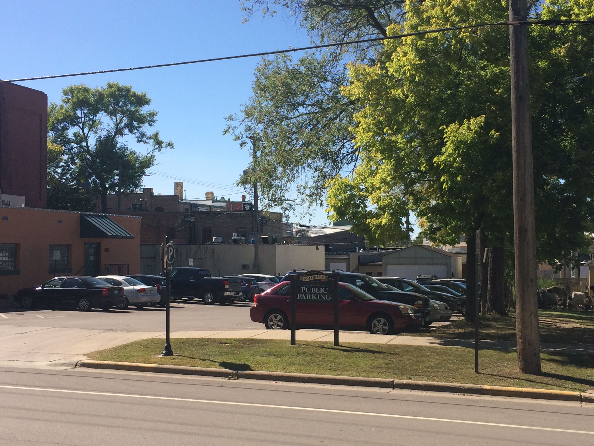
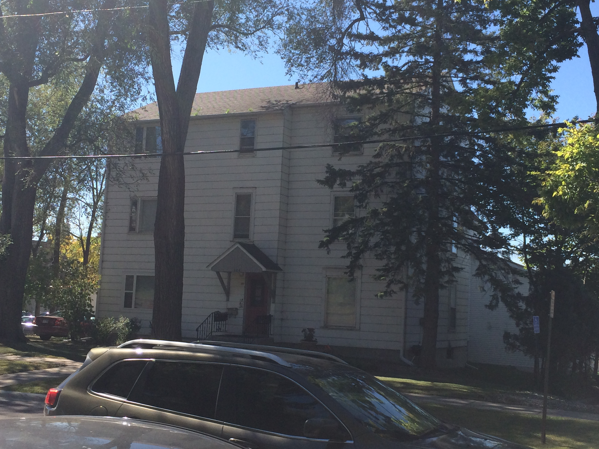
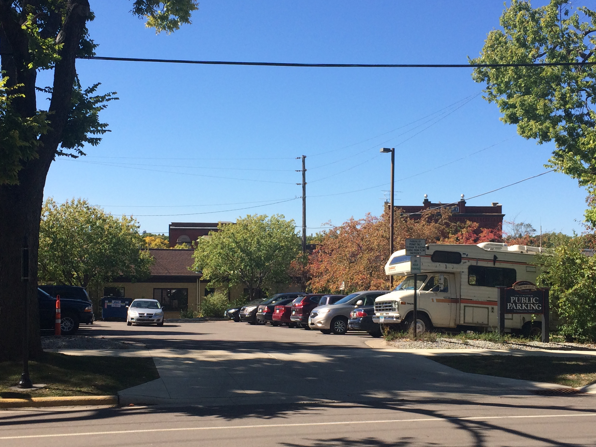
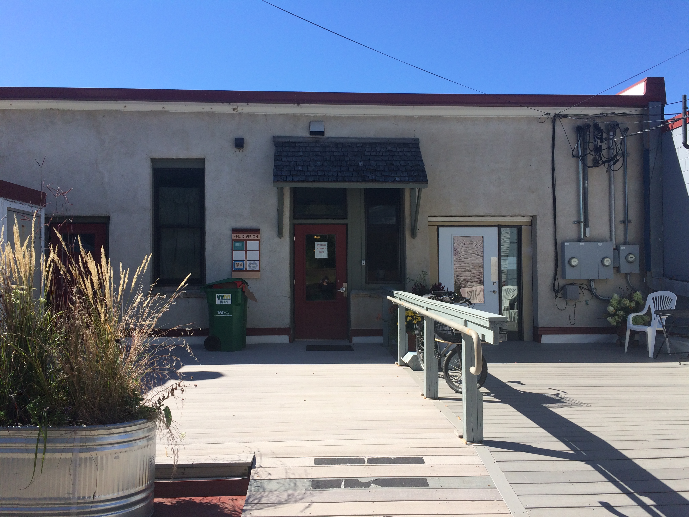
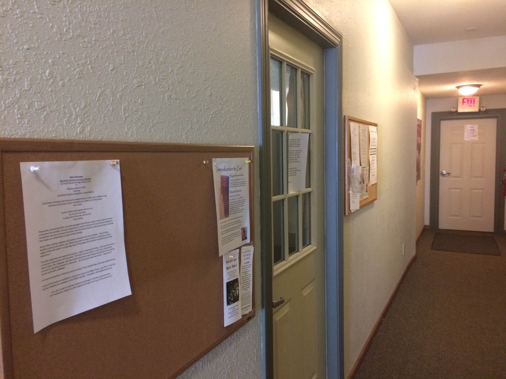
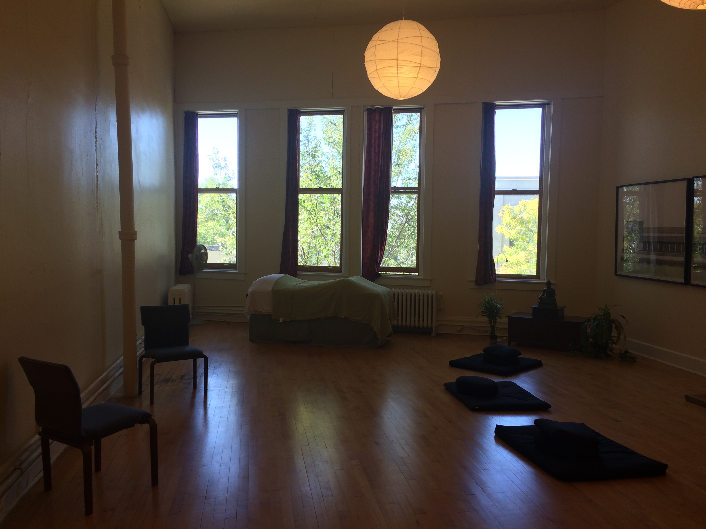

I sublet at the Northfield Buddhist Center, located at
313 1/2 Divsion St S, Northfield, MN 55057Please use the rear alley entry off of Washington St. As this entry is handicap accessible. I include below pictures for helping find the space for your first visit.
  The entry is located between the public parking lot next the the Grande Event Center on Washington pictured on the left and the level upper parking lot next to the Northfield Public Library, behind the large white rental house that is between both lots. Park in either lot and walk towards the alleyway at the back of the parking lot. The entrance is between the two parking lots and has a grey deck area that looks like this:
Enter the middle maroon colored entry door, the door on the right side is for "Heath Creek Cycles."
 After entering through the maroon door, the door to the Buddhist Center is the second door on your left.